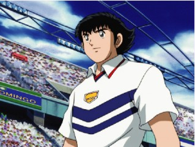
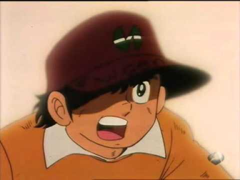
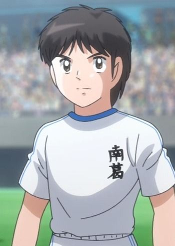
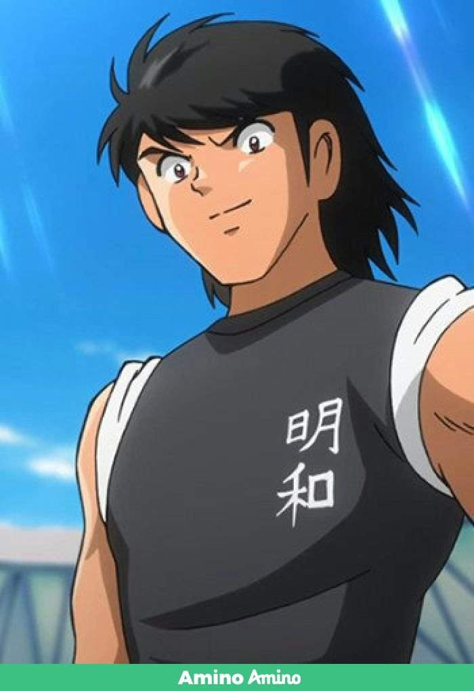
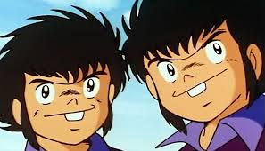
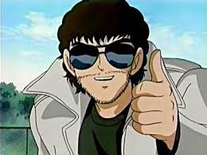
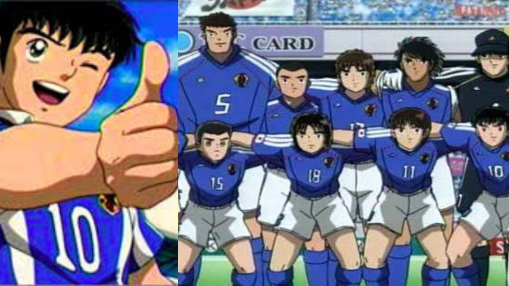
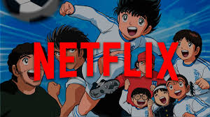

HISTORIA:
Captain Tsubasa conocido como Súper Campeones o Capitán Tsubasa en Hispanoamérica
y Campeones: Oliver y Benji en España, es una serie de manga escrita e ilustrada
por Yoichi Takahashi en 1981. Una adaptación a serie de anime se desarrolló apenas
dos años después del lanzamiento del manga, la cual tuvo gran éxito a nivel
internacional, siendo emitida originalmente entre 1983 y 1986 por TV Tokyo y
dirigida por Isamu Imakake. En las décadas siguientes, se hicieron cortas secuelas
televisivas, las cuales no lograron el mismo impacto de la primera adaptación.
La historia tiene como tema central el fútbol, narrando las intrépidas aventuras de Tsubasa Ozora y
sus amigos desde la infancia hasta que son profesionales y llegan a formar parte de la selección nacional de Japón.
La trama también se centra en la relación de Tsubasa con sus amigos, la rivalidad hacia sus oponentes, los entrenamientos,
la competición y los acontecimientos en cada uno de los partidos que se juegan.
En esta pagina podemos encontrar:
EN LA SIGUIENTE PARTE TOCA LAS IMAGENES PARA OBTENER INFORMACION.
| PERSONAJES | OCUPACION | DESCRIPCION | IMAGEN CON ENLACE A SABR MAS |
| Oliver Atom: | JUGADOR ESTRELLA DE POSICION DE DELANTERO. | El personaje predilecto de todos los amantes de la serie. Es el protagonista de la serie y el que mejor futbol tiene. Muchos futbolistas que conocemos hoy en día revelaron inspirarse en este personaje. |
 |
| Benji Price: | PORTERO DEL EQUIPO | De los dos porteros que se roban el show en la serie, Benji es el más representativo. Su imbatibilidad y su técnica lograron cautivar a más de una generación. |
 |
| Tom Misaki: | MEDIOCAMPISTA | Es el mejor socio de Oliver a la hora de atacar, algo en lo que se demuestra que las mejores amistades también se dan en el futbol. A pesar de mantener un rol protagónico, se ve alejado un tiempo por azares de la serie. |
 |
| Steve Hyuga: | DEFENSA CENTRAL | Tiene una actitud altanera y engreída, pero no quita que sea uno de los favoritos y más recordados por los aficionados. Algunas de sus cualidades tanto mentales como en el futbol coinciden perfectamente con algunos jugadores de la vida real |
 |
Hermanos Koriotto (Mazao y Kazuo): |
MEDIO EXTREMOS (IZQUIERDO Y DERECHO). | Este par de gemelos lograron ocupar un espacio muy especial en el corazón de los fans. Las acrobacias generadas en la cancha bastaron para convertirse en favoritos. Se caracterizan por su tiro doble hasta el huracán. |
 |
Roberto Zedinho: |
DIRECTOR TECNICO. | Su tiempo como futbolista en la serie ya había quedado atrás. Tuvo sus momentos como figura de la selección brasileña. El padre de Oliver le pidió que lo buscará para pulir su talento. Así fue, no solo con él, también con el resto de sus compañeros. |
 |

TU OPINIÓN NOS IMPORTA, PUEDES RESPONDER EN EL ESPACIO EN BLANCO O PARA
AHORRARN TIEMPO SELECCIONANDO LAS RESPUETAS EN OPCIONES.
¿QUE TE PARECIÓ LA SERIE?
¿CONSIDERAS QUE OLIVER ES UN BUEN JUGADOR?
RESPUESTA:
¿BENJI PRICE TE PARECE UN BUEN PORTERO?
RESPUESTA:
¿QUIEN ES TU PERSONAJE FAVORITO DE ESTA SERIE?
RESPUESTA:
¿HABIAS ESCUCHADO DE ESTA SERIE?
RESPUESTA:
DEJANOS TU "ME GUSTA" Y COMPARTE ESTA INFORMACIÓN EN FACEBOOK.
GRACIAS POR VISITAR MI PÁGINA WEB
¿DATO CURIOSO?
La serie se lanzo el mes pasado para la
plataforma de Netflix, podemos disfrutar de la serie
en esta aplicacion.
